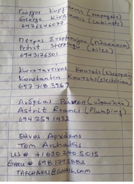

Wasseruhren
Wasseruhren wurden 2025 erneuert und neu beschriftet:
o Nr. 7: Wohnung Franz
o Nr. 9: Wohnung Thomas
o Nr. 10: Wohnung Hans
Waschmaschine
Link zur Bedienungsanleitung
Klimaanlagen
Steuerplatine wurde 2025 in Wohnung Thomas erneuert.
Weitere Ersatzplatine befindet sich in Wohnung Hans.
Link zur Bedienungsanleitung
Hilfreiche Telefonnummern
ALEXI (Hausmeister) – spricht nur albanisch / griechisch
+30 694 6767489Tsourekas Georg
+30 694 4846974Schlüsseldienst
+30 698 9141453Soultsas Christos (Klimaanlagen - Techniker)
+30 697 0026666Korosiadis Theo (Pella House Hotel GR) – spricht Deutsch
+30 698 4831771Weitere Nummern:
Handwerker auf Empfehlung vom Nachbarn
An ALLE zum Ende der Saison
- Alle Türln und Laden öffnen
- Fenster im BAD/WC kippen
- In Wohnung „Hans“ Küchenfenster kippen (im Bad gibt es kein Fenster)
- Innentüren offen lassen
- Kühlschrank ausschalten, total leeren, auswischen, Tiefkühlfach und Schranktür geöffnet lassen
- Fliegengitter von Eingangstür aushängen und in die Wohnung stellen
- ALLE Wasserhähne öffnen, dann unten
- Den Hauptwasserhahn schließen
- In Wohnung „Hans“ gibt es im Bad unter dem Waschbecken einen zusätzlichen Hauptwasserhahn – diesen ebenfalls schließen.
- Die Wasserhähne in den Wohnungen wieder schließen
- In Wohnung „Hans“ sind im Bad und in der Küche neue Eckventile verbaut (2× Küche, 3× Bad). Diese ebenfalls mehrfach betätigen, aber am Ende geöffnet lassen.
- Den Hauptwasserhahn schließen
- E-Hauptschalter ausschalten
- Matratzen aufstellen
- Waschmaschine – Türl geöffnet lassen
- Batterien aus Fernbedienungen (TV, Klimaanlage, …) herausgeben.